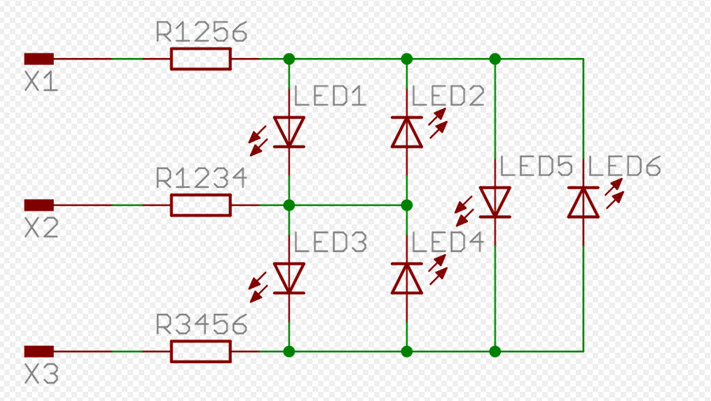

Le projet : l'horloge à mots (2mn)
- Présentation, fonctionnement, tarifs commerciaux


- Nos objectifs : faible coût, composants simples





3 Planches
La première pour les lettres


EASEL
Comment couler de la résine (3mn)
Etape 1 : Mettre du scotch pour contenir la résine

Etape 2 : Mettre la couche des mots

Etape 3 : Préparer la résine.
Respecter les dosages (2 pour 1)

Bien remuer (5mn)
Faire ça dans un environnement chaud 20°C
Etape 4 : Couler la résine.

Etape 5 : Positionner les Leds

Test des différents types de LED


Pour ceux qui ne connaissent pas et sont restés sur Arduino